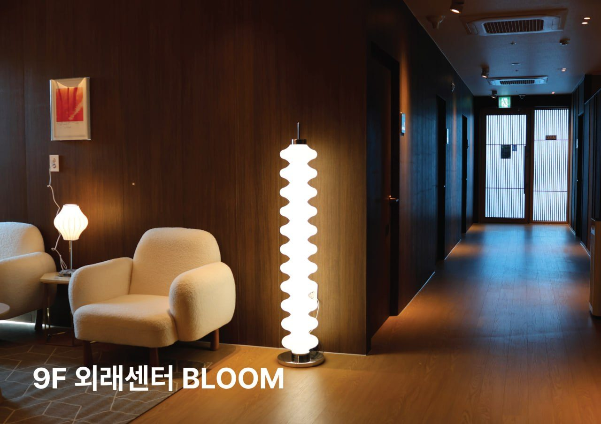
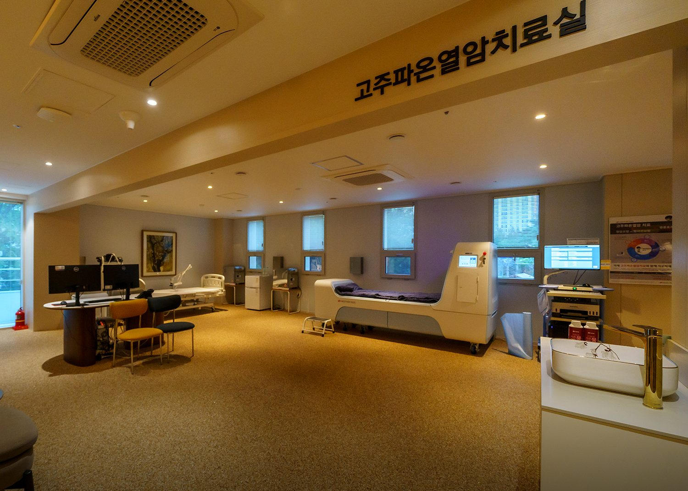
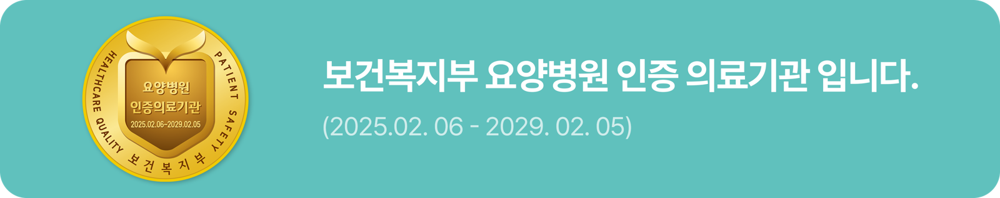

첫 화면
당신이 기댈 수 있도록,
치료부터 회복까지 함께하는 하일렌입니다.
하일렌요양병원 정원
하일렌요양병원은 전남광주 서구에 있는 암요양병원으로, 암 치료 과정의 회복을 돕는 곳입니다.
암 치료 자체는 현재 진료중인 대학병원에서 이어지고, 그 사이의 회복은 하일렌요양병원이 입원과 외래로 관리합니다. 하일렌요양병원에는 자체 응급실이 없습니다. 응급 상황은 발견, 초기 안정화, 상급 치료병원으로 신속 전원의 순서로 대응합니다.
지금 어느 시기에 계신가요
시기에 맞는 안내 페이지로 바로 갑니다.

수술 후 회복
통증·상처·합병증을 세심하게 관리합니다. 입원 서류와 병실, 치료식을 안내합니다.
항암·방사선 치료 중
발열·오심·피로 등 부작용 증상을 관리합니다. 치료 일정 사이에는 주중과 주말 모두 1박 2일부터 단기입원으로 이용할 수 있습니다.
치료 후 외래·단기입원
떨어진 체력과 신체 기능 회복을 돕습니다. 외래 회복치료와 단기입원을 안내합니다.
외래·입원 안내
입원
의료진의 치료와 회복 프로그램으로, 당신의 하루를 건강하게 채워드립니다.
단기입원
1박 2일부터 치료와 회복을 함께 설계하는 단기 집중 케어를 제공합니다.
외래
정기적인 외래 진료와 회복 모니터링으로, 치료 이후의 건강한 일상을 이어갑니다.
레지던스 회복공간
도심 속 편리한 접근성과 1인실 위주로 구성된 병실, 의료진의 세심한 회복 케어로 치료 이후의 여정을 함께 합니다.

치료 프로그램
수술·항암·방사선 치료 기간의 회복에 오롯이 집중합니다.
고주파온열암치료
고주파온열암치료(High-Frequency Hyperthermic Cancer Therapy)는 고주파를 암조직에 가하는 온열 치료법입니다.
고압산소치료
고압산소치료(Hyperbaric Oxygen Therapy)는 고농도의 산소를 흡입하는 치료법입니다.
전신온열실
전신온열치료(Whole-body Hyperthermia Chamber)는 전신에 열을 가하는 온열 치료법입니다.

의료진 소개
암중점 의료진을 소개합니다.


암정보 도서관

인증 내역

상담
궁금한 점 있으시면 언제든 물어보세요. 카카오톡 채널에서 입원 상담 및 프로그램 예약이 가능합니다. 단기입원 예약접수 받습니다.
입원·외래·단기입원 상담은 원내 상담실에서 안내합니다.
소식과 안내 글은 공식 블로그와 공식 유튜브에서도 보실 수 있습니다.
제공 하일렌요양병원 · 갱신 2026-10-21